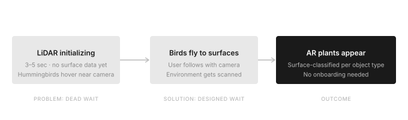
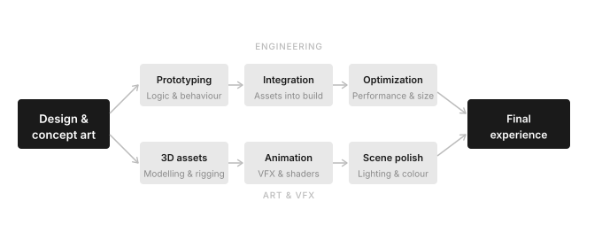

Designing for a technology that didn't exist in users' hands yet
When Apple was preparing to announce the first iPhone with LiDAR, they reached out to Snap. I was assigned as the experience lead, partnering closely with the engineering team. The brief was straightforward in scope and extreme in deadline: design and ship a flagship AR experience that demonstrated what LiDAR could do.
Within Snapchat, LiDAR initialization took 3–5 seconds — time needed to scan the environment and return usable surface data. That's a long time to show a user nothing. The experience needed to be designed around that wait, not despite it.
This was unlike anything I had led before. The experience used LiDAR surface detection, ARKit surface classification across multiple object classes, body tracking, tap interactions, procedural shader-based grass and sky, and a full cast of 3D assets — each with its own reveal animation. The number of distinct assets, each requiring 3D modeling, texturing, shading, and animation, was unlike any previous project in my experience.
We developed three directions and presented them to Apple. Magic Forest was my recommendation — and Apple's pick.
The choice of concept wasn't arbitrary. LiDAR gives you a mesh — geometry, surface normals, depth. What made this interesting was combining it with ARKit's semantic classification: the ability to distinguish a floor from a wall from a table from a ceiling. Any experience could use that quietly, invisibly. But this was effectively a technology launch, seen by millions on a keynote stage. The right move was to make the capability legible — to show it working, loudly and beautifully.
Magic Forest was a natural fit for that. Every surface type gets something that belongs there: grass and lilies on floors, succulents on tables, vines climbing walls, a night sky covering the ceiling. The surface classification isn't hidden — it's the entire visual logic of the experience. A viewer watching the keynote could see, in seconds, that the phone understood the room.
The hummingbirds were the solution to the initialization window. When a user first opens the experience, birds appear near the camera — alive and present, something to look at while LiDAR scans the environment. As initialization completes and mesh data starts coming in, the birds fly out to the detected surfaces and reveal plants where they land.
That clarity of concept is also what made the hummingbirds work so well. They're not a distraction from the wait — they're the first sign that the experience is alive. As they fly to surfaces and reveal plants, they make the scanning process visible and intentional. The wait becomes part of the experience. The birds are the bridge.

What made this work beyond the visual: we never needed to interrupt the experience with onboarding text or instructional dialogs telling users to look around and walk around. The birds did that job naturally. Users followed the birds' flight with their camera — scanning more of the environment, spawning more content around them. The instruction was built into the design.
Surface classification from ARKit drove what appeared where: grass and lilies on floors, succulents on tables, different plants on chairs, vines climbing walls, a night sky covering ceilings. When a person entered the frame, a hummingbird would fly to them and hover beside their shoulder. Tapping any surface revealed a flower — surface-normal-aware, growing upward from horizontal surfaces, outward from vertical ones.
Video: Snap Lens Studio · © Snap Inc.
Given the timeline and complexity, I structured development into two parallel streams. The engineering team began building the spawning logic, bird behavior, and interaction systems using simple primitives — boxes standing in for the final assets. Simultaneously, the 3D and VFX teams crafted the actual assets. The two streams converged progressively as assets were integrated into the live build.
The grass and night sky were technically novel for us at the time — procedural, shader-based, and animated. Kurt Kaminski from the engineering team built the shaders, producing grass with realistic movement and a night sky with feathered edges that felt like it belonged in the scene.
Throughout the build, we collaborated closely with the Apple team, sharing progress as the experience evolved week by week.

Magic Forest was featured on the Apple keynote at the iPhone 12 launch — seen by 61 million viewers on YouTube alone. It was a landmark moment for Snap's AR platform and for LiDAR as a consumer technology.
Years later, it still holds up as one of the most technically ambitious AR experiences I've been part of. I'm still proud of it.
Video: Apple iPhone 12 keynote · © Apple Inc.